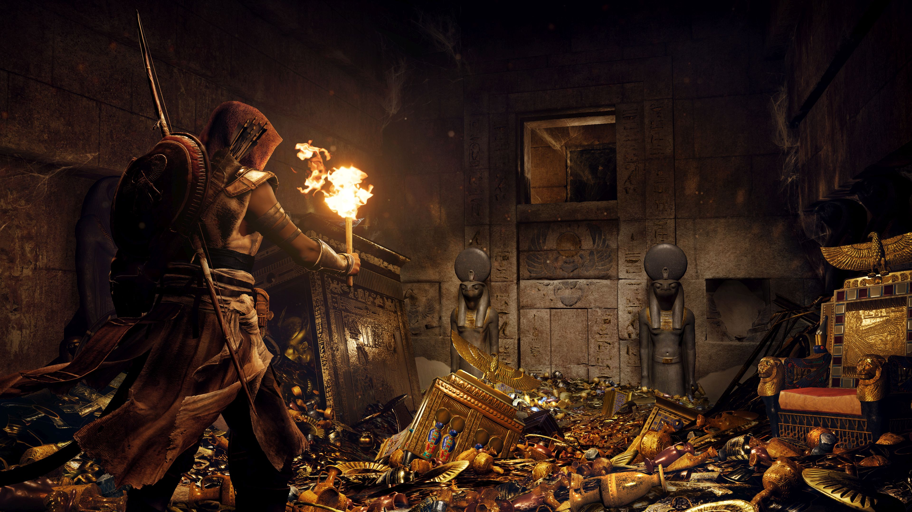

Assassin's Creed Origins
Assassin's Creed Origins is an action-adventure video game developed by Ubisoft Montreal and published by Ubisoft. It is the tenth major installment in the Assassin's Creed series and the successor to 2015's Assassin's Creed Syndicate. It was released worldwide for Microsoft Windows, PlayStation 4, and Xbox One on October 27, 2017.
The game is set in Ancient Egypt during the Ptolemaic period and recounts the secret fictional history of real-world events. The story explores the origins of the centuries-long conflict between the Brotherhood of Assassins, who fight for peace by promoting liberty and The Order of the Ancients—forerunners to the Templar Order—who desire peace through the forceful imposition of order. Origins received positive reviews from critics, who praised the story, characters, voice acting, reworked gameplay-systems, immersive world of Egypt and the visuals, while criticizing some of the pacing and technical issues. The game has been lauded as either the best or one of the best installments in the series by multiple critics.
Gameplay ▾
Assassin's Creed Origins is an action-adventure stealth game played from a third-person perspective. Players complete quests—linear scenarios with set objectives—to progress through the story, earn experience points, and acquire new skills. Outside of quests, players can freely roam the open world environment on foot, horseback, camel-back or boat to explore locations, complete optional side-quests and unlock weapons and equipment.
The "eagle vision" mode, which was used by the franchise to give players the ability to scout an area by highlighting enemies and objects, has been replaced by a Bonelli's eagle named Senu as a companion. Players are able to take control of Senu and scout an area in advance, highlighting enemies which will then be visible when they return to controlling Bayek, the game's main character. Players can also tame various predators which will serve as a companion for the players and assist them against enemies. Naval combat, underwater exploration and tomb raiding return to the series. However, unlike previous games in the series, Origins Does not include many tall structures for climbing to unlock areas of the map.
The game also features revised combat mechanics. Previous titles in the Assassin's Creed series used a "paired animation system" whereby the player character would engage with an enemy and combat would be dictated by a series of predeterminted animations based on player inputs and scripted AI movements. Assassin's Creed Origins will move to a "hit-box system". When the player wields a weapon, they will strike at whatever is in range, allowing them to hit enemies directly, injure individual body parts, and creating the possibility of missing an enemy entirely. Complementing this is the way weapons fall into different categories and are rated on their damage dealt, speed and range.

(Click to enlarge)
Plot ▾
The player takes on the role of a Medjay named Bayek as he works to protect the people of the Ptolemaic Kingdom during a time of widespread upheaval: the Pharaoh, Ptolemy XIII, struggles to maintain his rule whilst harbouring ambitions of expanding his kingdom; his sister, the recently deposed Cleopatra, begins marshalling loyalist forces to launch a counter-coup against Ptolemy; and frequent incursions into the Kingdom by the Roman Republic under the command of Julius Caesar lead to fears of an imminent invasion. Bayek's role as a Medjay brings him into contact with the secretive forces manipulating these events and sees him become the first Assassin.

(Click to enlarge)
Development ▾
Development of Assassin's Creed Origins started in early 2014, after the completion of Assassin's Creed IV: Black Flag. The series had been following a yearly release cycle, but after the launch of Assassin's Creed Syndicate in 2015, Ubisoft chose to delay the release of Origins until 2017. Ubisoft CEO Yves Guillemot cited a desire to focus on the quality of the individual titles, the opportunity to develop future games with new engines, and the disappointing sales of Syndicate as the reasons behind the decision. The team enlisted Ubisoft Kiev to develop the PC version in parallel with the console versions.
Information on Origins, then titled Assassin's Creed Empire, first leaked in January 2017, showing several screenshots of a character on a boat and in front of a cave. The game was officially revealed on June 11, 2017. It is being developed using the latest iteration of the AnvilNext engine.[citation needed] During production of Assassin's Creed III in November 2011 Ubisoft conducted a fan survey exploring potential settings for future titles. Ancient Egypt was one of the most popular choices, but Alex Hutchinson, the creative director of Assassin's Creed III, dismissed the results as he considered Ancient Egypt—as with the other two chosen settings, feudal Japan and World War II—as being "the worst choices" for a setting. The development team hired Egyptologists to assist in making the open world more accurate to the time period.
(Click to enlarge)